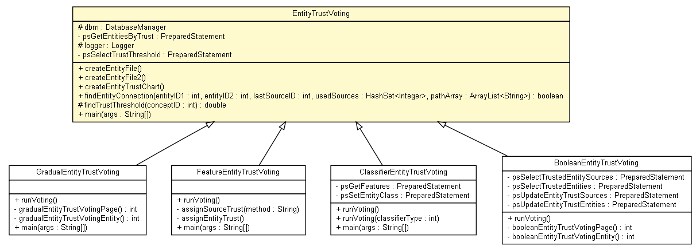

tud.iir.classification.entity
Class EntityTrustVoting

java.lang.Object
 tud.iir.classification.entity.EntityTrustVoting
tud.iir.classification.entity.EntityTrustVoting
- Direct Known Subclasses:
- BooleanEntityTrustVoting, ClassifierEntityTrustVoting, FeatureEntityTrustVoting, GradualEntityTrustVoting
public class EntityTrustVoting
- extends java.lang.Object
|
Method Summary |
void |
createEntityFile()
Create an entity file. |
void |
createEntityFile2()
file format:
concept queryType entity |
void |
createEntityTrustChart()
|
boolean |
findEntityConnection(int entityID1,
int entityID2,
int lastSourceID,
java.util.HashSet<java.lang.Integer> usedSources,
java.util.ArrayList<java.lang.String> pathArray)
find connection (sources-entities) between two entities (depth first) |
protected double |
findTrustThreshold(int conceptID)
Calculate the trust threshold for all entities of the concept with the given id and a trust higher than 0. |
static void |
main(java.lang.String[] args)
|
| Methods inherited from class java.lang.Object |
clone, equals, finalize, getClass, hashCode, notify, notifyAll, toString, wait, wait, wait |
dbm
protected DatabaseManager dbm
psGetEntitiesByTrust
private java.sql.PreparedStatement psGetEntitiesByTrust
logger
protected static final org.apache.log4j.Logger logger
psSelectTrustThreshold
private java.sql.PreparedStatement psSelectTrustThreshold
EntityTrustVoting
public EntityTrustVoting()
createEntityFile
public void createEntityFile()
- Create an entity file.
file format:
concept:
entity total | 1:x,2:y,....
createEntityFile2
public void createEntityFile2()
- file format:
concept queryType entity
createEntityTrustChart
public void createEntityTrustChart()
findEntityConnection
public boolean findEntityConnection(int entityID1,
int entityID2,
int lastSourceID,
java.util.HashSet<java.lang.Integer> usedSources,
java.util.ArrayList<java.lang.String> pathArray)
- find connection (sources-entities) between two entities (depth first)
findTrustThreshold
protected double findTrustThreshold(int conceptID)
- Calculate the trust threshold for all entities of the concept with the given id and a trust higher than 0.
Find that threshold by looking for the highest gradient in the number of entities dependent on the trust.
^ number of entities
|
| |
|_ _|_ _ _> trust
- Parameters:
conceptID -
- Returns:
main
public static void main(java.lang.String[] args)
- Parameters:
args -